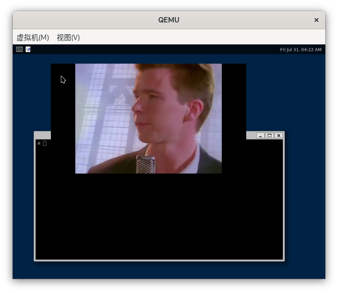
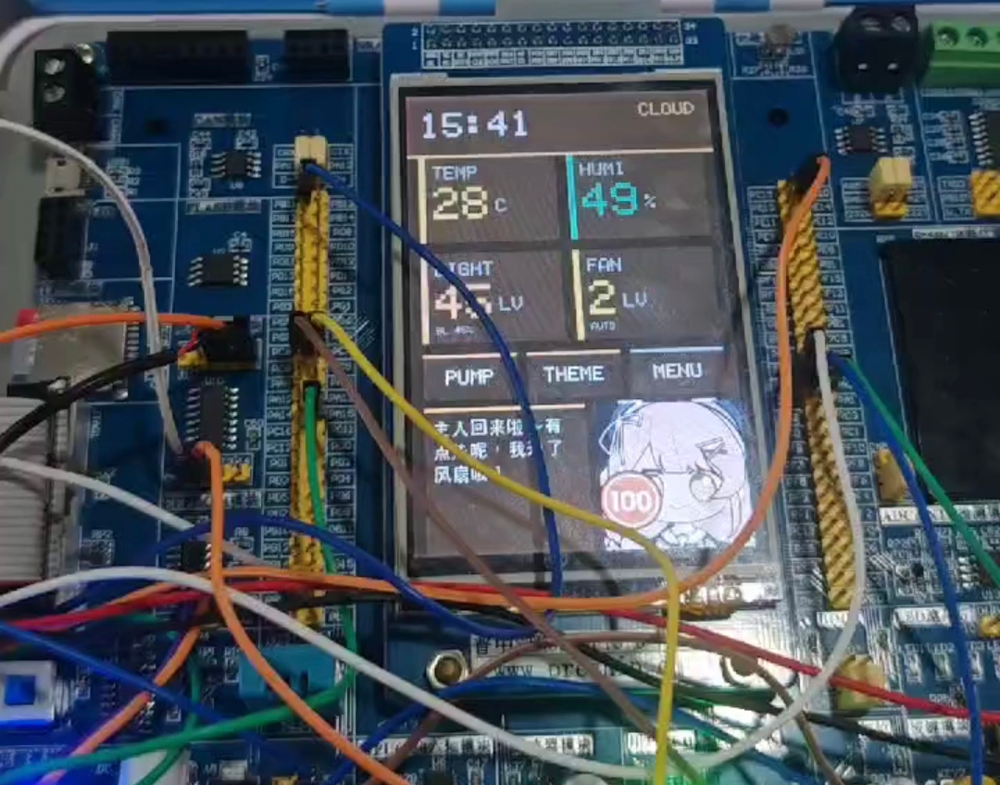

AOSCC 2026 POSTER
A20OS
从零开发的实验性混合内核
从 20 KiB MCU 到 Wayland 桌面，在多种架构上重新思考操作系统接口

WHAT IS A20OS?
A20OS: 再一次，重新定义操作系统接口10
A20OS 是一个从零写起的多架构混合内核。调度、内存管理、网络栈、文件系统和关键设备路径位于内核态；驱动还可按 generic profile 以 .a20drv 内核模块部署，Native ABI 也提供用户态驱动服务。内核同时实现 Linux ABI 和自研 Native ABI：前者运行 musl 和现有程序，后者用带权限的 handle、VMO / VMAR、Channel / EventQ 探索新接口。仓库包含进程、SMP、虚拟内存、VFS、socket、驱动、图形和音频路径，以及 Cortex-M3 / NOMMU 与 Wayland 演示；不同目标的最新验证边界以仓库文档和同提交日志为准。
Wayland + FFmpeg
20–64 KiB SRAM
QEMU · VirtualBox · VisionFive 2 · Loongson LS2K1000 · STM32F103

开发者的大事，大快所有人心的大好事1DRIVER MODEL
A20OS 为设备发现、资源访问、类接口和卸载回收规定了共同流程，统一的驱动框架与接口使得移植工作前所未有地简单。
注册与发现：DRIVER_REGISTER 把 embedded 驱动放入链接器段；每次构建由 platform 提供唯一 current_board。PCI、VirtIO-MMIO 和 platform bus 负责发现与匹配，hwapi 封装 MMIO、IRQ、DMA 与时钟。
类接口：char、block、net、display、input、audio 使用各自的 class ops。所有 class 发布 sysfs 视图；通用动态 devfs 节点当前只覆盖 char、block、audio，input/display 使用聚合节点。
资源回收：probe 失败时会解除已经建立的绑定；remove 会先停止新调用，再等待正在执行的调用结束，最后释放 DMA 和 IRQ。
跨架构情况：协议驱动通过公共 PCI/VirtIO 与 hwapi 接口复用；某个目标是否已运行通过，必须查看与对应提交匹配的架构日志，不能从源码无条件编译推定。
这样的设计，使得板级代码主要负责 bus 和 hwapi，文件系统、网络和图形等子系统只使用 class contract，同一个协议驱动也更容易在不同架构之间复用。
A20多媒体，让他尽情摇摆2MULTIMEDIA
A20OS 的桌面支持建立在一套完整的多媒体栈上。图形输入、合成、视频解码和音频输出均运行良好。
显示与输入：virtio-gpu 和 virtio-input 通过 display / input class 接入 Weston，compositor、desktop shell 运行在 Linux ABI 用户态。
视频与音频：FFmpeg、Weston 和 Intel HDA 已经连通。图中的 QEMU 截图来自实际播放过程；音频支持 48 kHz 双声道 S16_LE、环形 BDL DMA 以及 stop / drain。
头抬起。是的，您正在AAAAA!3STATUS
Native ABI 用于探索 POSIX 之外的接口。目前分发表登记 136 个 syscall 入口，定义 14 类对象，并提供 handle table、启动协议、Channel 和 EventQ；用户态包含 liba20rt SDK、liba20c、mlibc sysdeps 与原生示例。登记入口不等于完整语义覆盖，动态链接、跨架构回归和两套 ABI 的同核对照仍需继续验证。
重新编排，事事好安排。4WHY DUAL ABI
A20 实现 Linux ABI 用来兼容已有软件，同时用作研究中的 baseline；Native ABI 则用来尝试新的接口设计。两套 ABI 分别维护用户线格式，并复用共同的内核子系统；当前仍有少量已记录的跨层依赖债务。
文件、任务、定时器和 IPC 端点都使用进程本地 handle，不再分别维护 fd、pid、timerid 等编号体系。
每个 handle 自带 rights。权限只能减少，跨进程传递时取交集，因此授权范围可以被准确控制。
Channel 传递带类型的消息；EventQ 已统一等待 channel、task、timer 和用户驱动 IRQ，file/socket/signal 事件接入仍是后续工作。
VMO / VMAR 分开表示内存对象和映射；task_spawn 明确指定新任务获得的能力和初始 handle。
参数结构包含 size 和 version，并预留 feature bits、稳定编号和实验区，方便以后增加功能。
Linux ABI保留 musl、git、vim、现有工具与发行版生态
Native ABI供新程序使用 handle、rights、VMO / VMAR、Channel / EventQ
A20设计哲学PHILOSOPHY
现代操作系统的设计哲学是：Handle/Capability 统一资源模型；显式权限降级和最小权限；结构化、可版本化的 syscall 参数；异步事件驱动的等待机制；从内核中移除策略，只保留机制。A20OS 的 Native ABI 设计应吸收了这些哲学，同时力求避免过度设计。
轰！嚓-嚓-嚓！5RESEARCH
A20的远景不止于此！通过提出一套新的ABI，A20实际上同时是一个系统研究项目。围绕 Native ABI，项目正在整理 rights 代数、双 ABI 隔离和对象生命周期，并计划在同一套内核实现上比较两种 ABI 的接口规模、权限表达、攻击面和性能。
这些工作会整理成可复现实验和系统方向会议论文，目标包括 OSDI 和 SOSP 。如果你对这些问题感兴趣，可以联系项目组，参与评测、实现和写作。贡献者可以列入作者名单——甚至是共一！
你的架构，总有A20很专业11ARCHITECTURE
A20OS 的 hosted 构建矩阵包括 RISC-V64、LoongArch64、AArch64、x86_64、ARM32、RISC-V32 和 PPC64LE；另有独立 ARMv7-M MCU profile。平台源码还覆盖 VisionFive 2、龙芯 LS2K1000 与 STM32F103。构建支持、SMP 白名单和运行验证是不同层级。
Linux ABI 用户态当前以 musl 为主，可以运行 git、vim、mksh、fastfetch、wget 以及 Weston / FFmpeg 等程序。
Native ABI 用户态包括 liba20rt、liba20c 与 mlibc 的 sysdeps/a20。仓库提供静态 libc 和专项 smoke 入口；动态链接、更多架构和当前提交是否通过须按运行状态文档与同提交日志判断。
坐和放宽，好东西就要来了6,7RELIABILITY
为了让内核在长期运行和压力测试中保持可靠，A20OS 为多核调度、阻塞唤醒和资源生命周期规定了明确的状态与所有权规则。
调度器为每个 CPU 维护运行队列，并明确区分 on_rq、dispatching 与 on_cpu 状态；tokenized Park/Wake 用序号隔离旧唤醒和旧超时，内核锁顺序则记录在 lock.h 中。
内存侧为 COW、大页拆分、page cache writeback 和 OOM 回收指定所有者；任务、文件、页面和设备引用也都有成对的获取与释放规则。
这些约束会通过压力测试和资源生命周期审计反复检查，保证整体可靠性。
你的下一个A20，何必是A20OS8DOWNSTREAM
A20OS 仓库提供内核、SDK 和多架构构建脚本。基于这些组件，发行版可以自行选择用户态、目标板、软件包、桌面和默认服务。
许可证：项目主体使用 Apache-2.0，允许修改、商用和再发行，并包含专利授权。下游需要保留许可证与 NOTICE、注明修改；第三方组件仍按各自许可证处理。
用户态：Linux ABI 可以使用 musl 和已有软件，liba20rt / liba20c 用于原生程序。板级配置、启动流程、根文件系统、软件包、桌面、更新方式和品牌均由发行版维护者决定。
欢迎基于 A20OS 发布和维护新的发行版。
AI 颠覆了行业——
请加入我们，我们还要进一步颠覆行业9JOIN US
A20OS 还有许多可以独立推进的模块。设计文档位于 docs/，Docker 提供交叉编译环境。
你可以从一块新板、一个 PCI / VirtIO 驱动、一段显示或音频支持开始；也可以构建 Native 动态链接器、软件包、桌面或下游镜像。再往深处，还有 SMP、内存、VFS、capability、性能评测与论文实验。
关于 AI：项目不限制 AI 工具。然而，无论代码是否由 AI 辅助完成，提交者都应该理解代码并对其负责。
github.com/fQwQf/A20OS
Apache-2.0
自由修改、移植、集成与再发行
欢迎 Star / Issue / PR